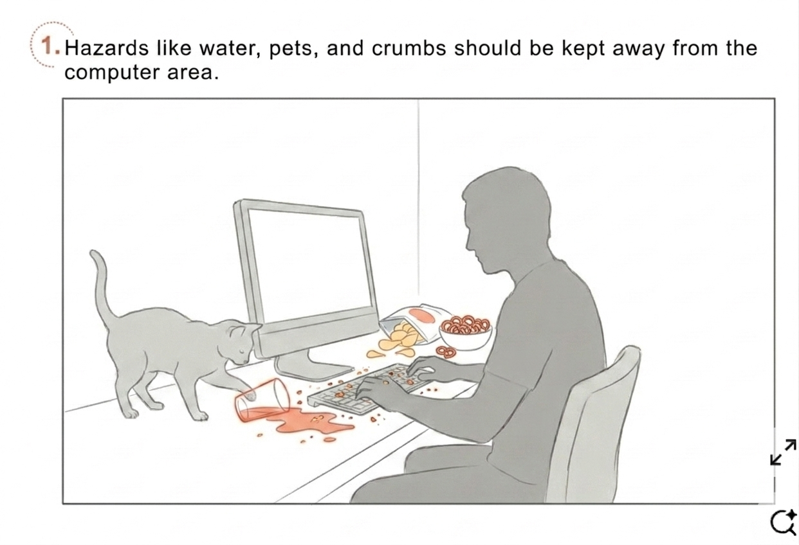
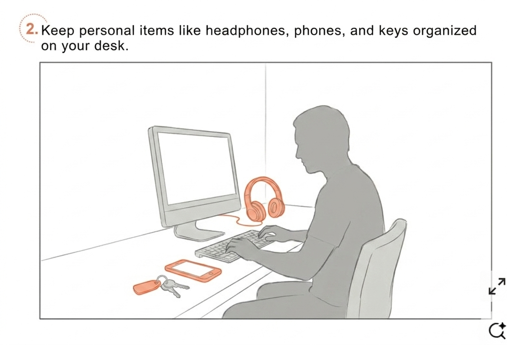
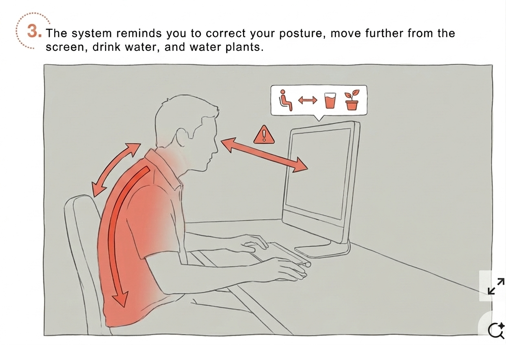
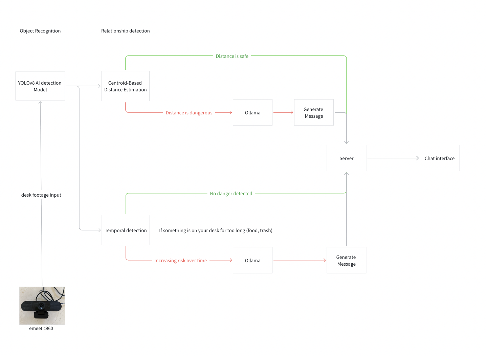
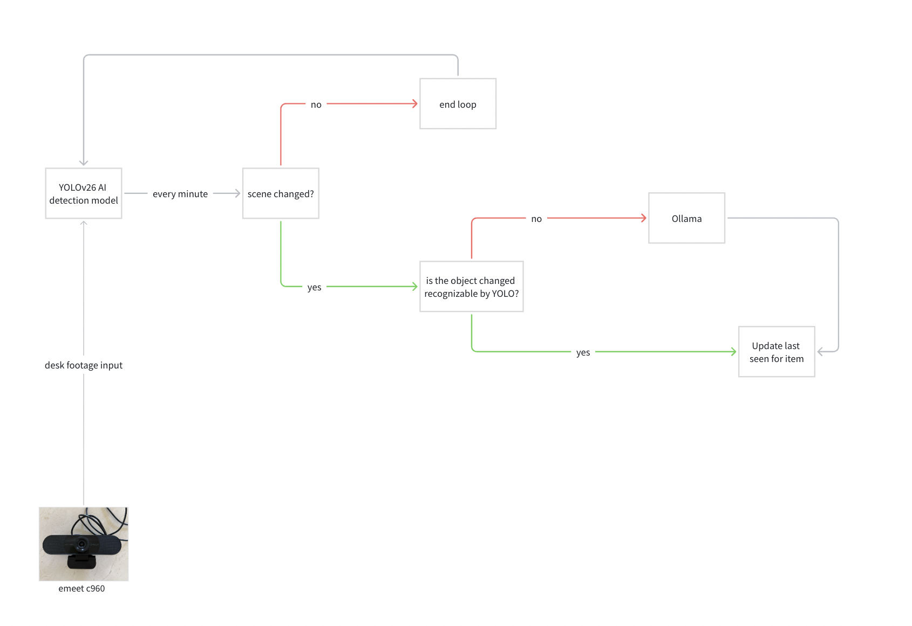
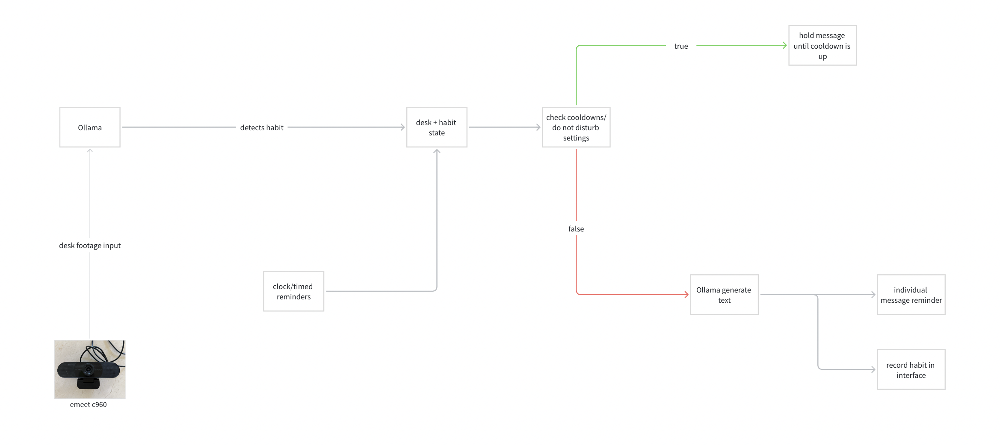
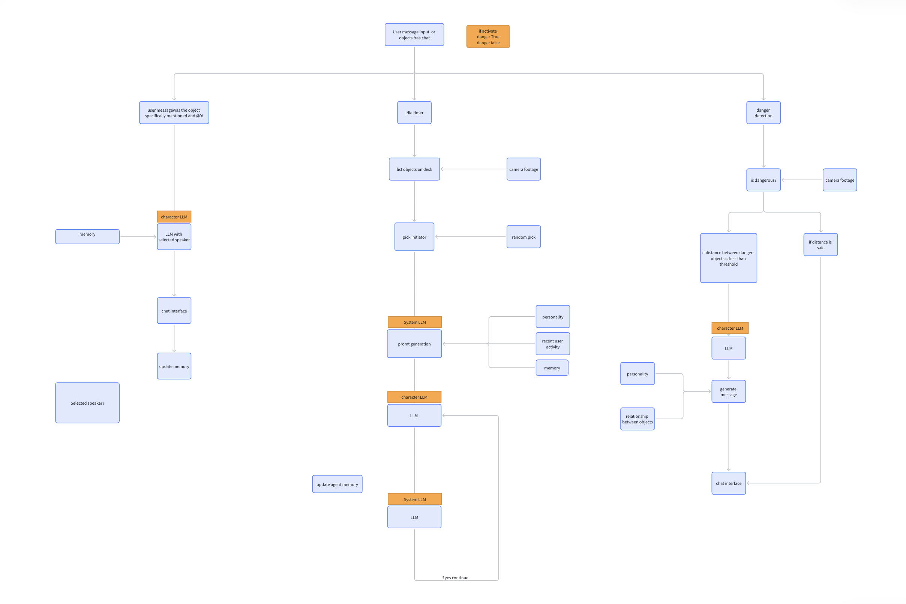
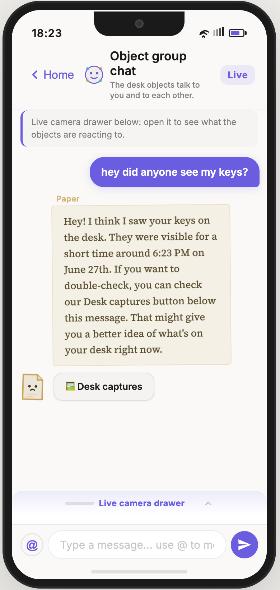

01
Hazards near your computer
Drinks, food, pets, or unstable objects near a laptop can trigger a clear message before something gets damaged.
AI desk companion · Computer vision · 2026
A camera-based desk assistant that turns everyday objects into quiet, useful reminders — helping users notice spills, clutter, misplaced items, and small habits before they become distractions.

The desk is where many daily objects gather: laptops, cups, keys, phones, books, headphones, plants, and personal items. These objects often create small problems — a cup too close to the keyboard, a phone pulling attention away, or keys disappearing under clutter.
Desk Talk treats the desk as a living system. It uses computer vision to understand what is on the desk, then turns object states into short messages, reminders, and agent-like dialogue. The goal is not to overwhelm the user, but to make the desk feel more aware and easier to manage.
Each scenario is based on a common desk problem: physical risk, missing objects, and repeated habits.

Drinks, food, pets, or unstable objects near a laptop can trigger a clear message before something gets damaged.

Keys, headphones, phones, and other small objects can be tracked through last-seen memory and object recognition.

The system notices posture, screen distance, hydration, phone distraction, and other repeated patterns.
Desk Talk is organized around three pipelines: risk detection, object memory, and habit reminders. Each pipeline converts visual input into a message the user can actually act on.

The camera checks whether objects are too close to dangerous zones, such as liquids near electronics or items drifting toward the edge of the desk.

The system updates a lightweight memory of where objects appeared, then lets the user ask natural questions like where an item was last seen.

Habit cues are filtered through cooldowns and context so reminders feel timely instead of repetitive.
Technical Pipeline
The dialogue system connects user input, idle object conversations, selected speakers, memory updates, danger detection, and character-specific LLM responses. This makes Desk Talk feel like a small group of desk agents rather than a basic alert system.


Alerts are designed to be short, specific, and easy to act on.
| Risk detection | Lost objects | Reminders & habits |
|---|---|---|
| Cup near keyboard Drink geometry is flagged before it becomes a spill. | “Anyone seen my keys?” Last-seen answer from the desk log and camera state. | Phone beside keyboard A focus nudge appears after the phone stays there too long. |
| Desk edge drift An object moving toward the edge can trigger a warning. | AirPods / wallet / phone Small objects are tracked when the scene changes. | Posture / screen distance Vision-assisted cues help identify repeated habits. |
| Crowded desk cluster The system can suggest tidying when the desk becomes visually overloaded. | Natural-language lookup Users can ask where something is instead of checking manually. | Hydration & plants Recurring reminders can be tied to visible desk objects. |
Most reminder tools interrupt the user from outside the task. Desk Talk starts from the physical environment itself. The desk already contains signals: object distance, object presence, clutter, and routines.
By translating those signals into calm conversation, the system makes reminders feel more contextual and less generic. It becomes a workspace layer that is simple on the surface but technically aware underneath.
The sitemap shows the main paths through the app: live camera evidence, object chats, settings, habits, captures, and individual character conversations.

This area is reserved for a live instance of Desk Talk. When the project is deployed, an embedded web client or read-only live feed can be placed here.
Demo embed
Add an <iframe> here when the hosted app is ready.